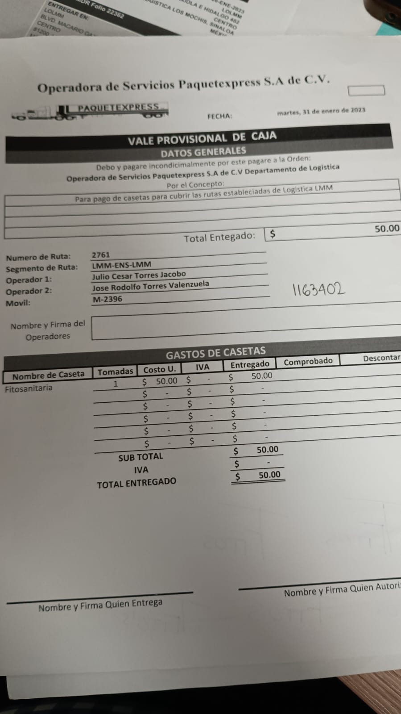
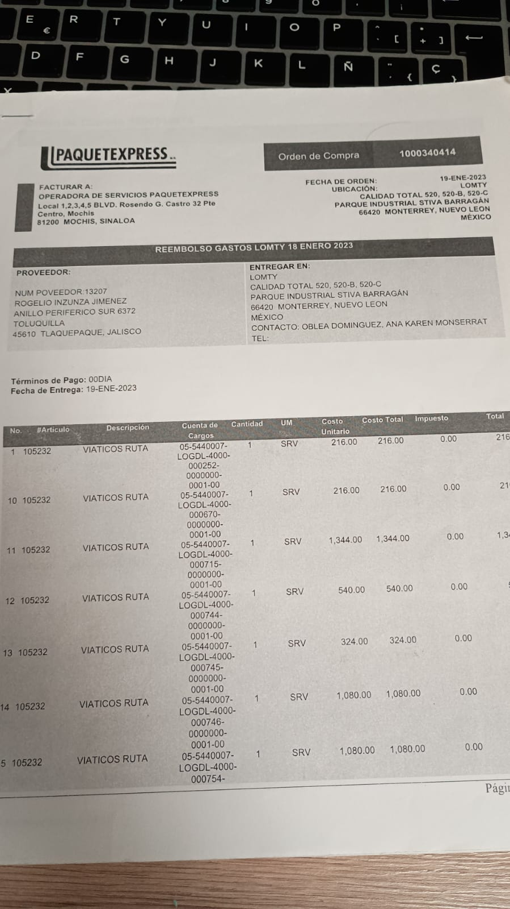
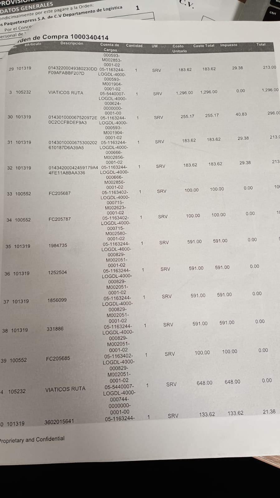
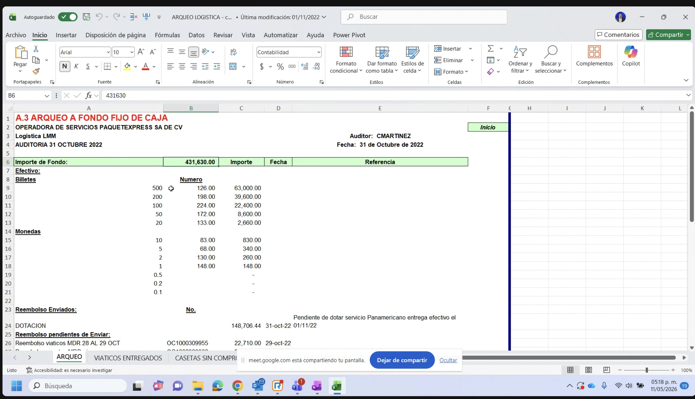
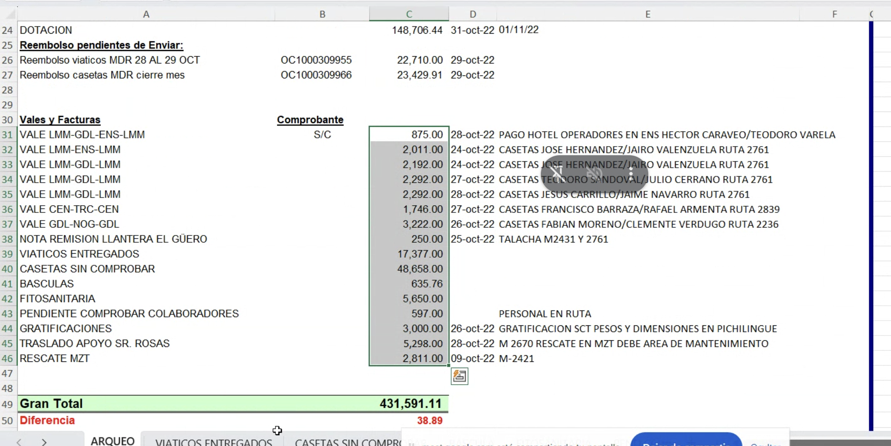

| Área | Hoy | Mañana con Uvicuo |
|---|---|---|
| Tesorería | Recibe Orden de Compra impresa + vales + tickets + Excel paralelo por correo. Concilia. Paga lunes/martes. | Recibe el PDF del periodo con totales y desglose contable. Sin papel, sin Excel paralelo. Posible pago continuo. |
| Auditoría interna | Arqueo manual sumando efectivo + reembolsos + vales + facturas en Excel. Cruza ticket↔factura en otro Excel. | Reporte filtrable por fechas con folio fiscal SAT en cada línea. Arqueo se reduce a verificar contra efectivo contado. |
| Operación | Administrador valida 1×1 cada ticket (folio físico vs digital), Excel diario + papel, cierra viajes manualmente. ~8h/día. | Autoaprobación maneja ~90% del volumen (factura↔gasto). El administrador procesa la cola de anomalías. ~30 min/día. |
| Contabilidad · Oracle | Recibe Excel + Orden de Compra impresa, concilia, pasa a Tesorería. Idas y vueltas semanales. | Carga el reporte de Uvicuo directo a Oracle. Sin doble fuente, sin conciliación manual. |





| Fecha | Categoría | Tipo de línea | Monto | Plan de gasto | Vehículo | Folio fiscal SAT | RFC emisor |
|---|---|---|---|---|---|---|---|
| 09-04-2026 | Combustible | GASTO_BASE | $1,398.68 | Raul W14 | ECO10_AUDI | c452ec2c…f49 | SLV001208MX8 |
| 09-04-2026 | Combustible | IVA_ACREDITABLE | $223.79 | Raul W14 | ECO10_AUDI | c452ec2c…f49 | SLV001208MX8 |
| 24-04-2026 | Alimentos y Bebidas | IEPS | $120.05 | Plan - Pablo Flores | SEAT-ARONA | 99df3f43…d50 | CCO8605231N4 |
| 30-04-2026 | Caseta | NO_DEDUCIBLE | $200.00 | Plan semanal | ECO10_AUDI | — sin factura — | — |
| Tarea hoy manual | AS-IS | TO-BE con Uvicuo |
|---|---|---|
| Validación 1×1 de tickets | 8 horas/día por administrador | ~30 minutos/día — solo anomalías + monitoreo |
| Recuperación de facturas | 4-6 horas/día en portales de proveedores | Eliminado — Uvicuo recupera automáticamente |
| Conciliación Tesorería ↔ Contabilidad | Semanal, idas y vueltas durante horas | Eliminado — fuente única |
| Arqueo de auditoría interna | Suma manual en Excel, horas por sucursal | Filtros + descarga en V1 — real-time en V2 |
| Liquidación a operadores | Bloqueada hasta validación 1×1 | Inmediata con autoaprobación |
| Dimensión de control | AS-IS | TO-BE con Uvicuo |
|---|---|---|
| Trazabilidad fiscal real | Nunca se valida el XML del SAT | Cada gasto trae folio fiscal SAT + estatus (válida/cancelada) |
| Errores de cálculo | Posibles e "incuantificables" | Eliminados — el sistema calcula |
| Auditoría | Mensual, por muestreo, reactiva | Continua, 100% cubierta |
| Fraude por folio inventado | Real — el folio no comprueba nada | Eliminado — match contra factura SAT |
| Pérdida de papelería | Real, documentos se traspapelan | Backup digital nativo |
| Visibilidad consolidada | Fragmentada en Excel + papel + Oracle | Una sola fuente con evolución continua del producto |